第 15 章 高分子的特性、應用與加工
本章預覽
核心問題
為什麼橡皮筋可以拉伸數倍再彈回，而塑膠尺一彎就斷？為什麼有些塑膠在冰箱裡變脆，有些卻能在微波爐中使用？為什麼塑膠袋放久了會變脆碎裂？高分子有三種截然不同的力學行為模式——彈性體（熵彈性）、熱塑性塑膠（降伏+冷拉伸）、熱固性塑膠（脆性）——它們各自對應不同的分子結構和溫度範圍。本章也涵蓋添加劑如何客製化高分子性質，以及塑膠從原料顆粒到最終產品的各種加工方法。
10 條關鍵概念
- 三種應力–應變模式：脆性（PS室溫）、延性+冷拉伸（PE、PP）、橡膠彈性（硫化橡膠）——同一種高分子在不同溫度下可表現不同模式
- 黏彈性（viscoelasticity）：高分子兼具黏性液體和彈性固體特性——行為取決於時間和溫度，不是單純的 Hooke 彈性
- 應力鬆弛：施加固定應變後，應力隨時間衰減——$E_r(t) = \\sigma(t)/\\epsilon_0$
- 時間–溫度疊加（TTSP）：高溫＝長時間等效。幾小時實驗可預測數十年潛變
- 冷拉伸與取向強化：頸縮區鏈沿拉伸方向排列 → 強度和剛性提升 >10 倍
- 熵彈性：彈性體的恢復力來自鏈回復到最大熵（最 random）狀態的熱力學驅動力——不是來自能量的最小化
- $T_g$ 和 $T_m$：$T_g$ 決定非晶區（玻璃態↔橡膠態）；$T_m$ 決定結晶區。兩者共同界定使用溫度範圍
- 塑膠分類：商品塑膠（量大價低）→ 工程塑膠（高強度耐熱）→ 高性能塑膠（極端環境）
- 添加劑：塑化劑（降低 $T_g$、增加柔軟度）、穩定劑（抗UV/氧化）、填料（降低成本/改善性質）、阻燃劑
- 成形方法：射出、擠出、吹瓶、壓縮、旋轉成形、3D 列印——選擇取決於塑膠是熱塑或熱固
🧭 本章推理地圖
- 高分子鏈需要時間才能旋轉、滑移或解纏結（§15.3–§15.4）→ 力學反應取決於溫度、載入時間與應變速率（§15.2–§15.3）。
- 升溫或延長觀察時間增加鏈段運動（§15.3）→ 產生黏彈性、潛變與應力鬆弛（§15.3、§15.6）→ 由時間–溫度疊加原理連結（§15.3）。
- 分子量、結晶度、取向與交聯限制鏈移動（§15.4–§15.5）→ 形成塑膠（§15.10–§15.17）、纖維與彈性體（§15.18、§15.24）的性質。
- 添加劑（§15.19）及加工中的流動、冷卻與固化（§15.20–§15.23）→ 改變鏈排列和缺陷 → 成形方法成為性質設計的一部分。
- 由服役條件反推材料、添加劑及加工法（§15.10–§15.24）→ 再檢查老化、回收與生命週期（§15.25–§15.26）。
先備知識橋接
- Ch14：分子量（$M_n, M_w$）、分子結構（線性/分支/交聯/網狀）、立體組態（tacticity）——這些決定本章討論的力學行為模式
- Ch14：結晶度、折疊鏈片晶、球晶——理解半結晶高分子的變形需要這些微觀結構概念
- Ch14：$T_g$ 和 $T_m$ 的定義——本章會深入討論它們的工程意義，而非重複定義
- Ch6：金屬的應力–應變曲線——對比高分子會發現，降伏和頸縮的微觀機制完全不同（差排滑移 vs 鏈取向）
- Ch13：$T_g$ 在無機玻璃中的意義——與高分子 $T_g$ 的對比：無機玻璃是動力學凍結，高分子 $T_g$ 是鏈段運動的 onset
15.2 高分子的應力–應變行為
曲線取決於測試時間相對鬆弛時間：低溫或快速載入時鏈段來不及重排，材料較硬脆；高溫或慢載入則較軟韌。比較性質時必須同時指定溫度、應變速率與含水狀態。
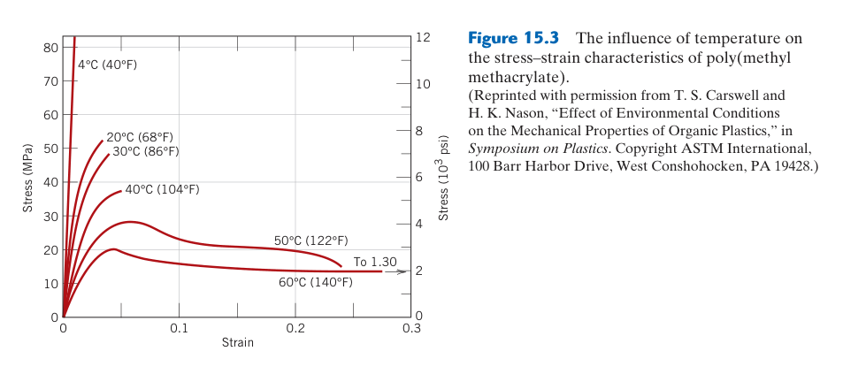
15.3 黏彈性——時間依賴的力學行為
簡單模型各描述部分行為：Maxwell 模型適合應力鬆弛，Kelvin–Voigt 適合延遲潛變；真實高分子需多個鬆弛時間。黏彈耗能使載入卸載形成遲滯並可能自發熱。
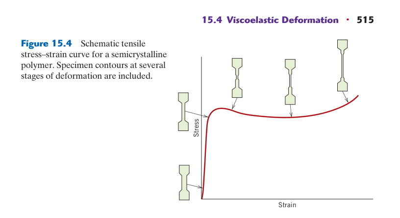
15.4 高分子的變形與斷裂
降伏後可出現穩定頸縮：半結晶高分子經片晶滑移、解摺與鏈取向，隨後取向硬化使頸縮傳播。玻璃態高分子可能形成含微孔與纖維的銀紋，吸能後也可能演變成裂紋。
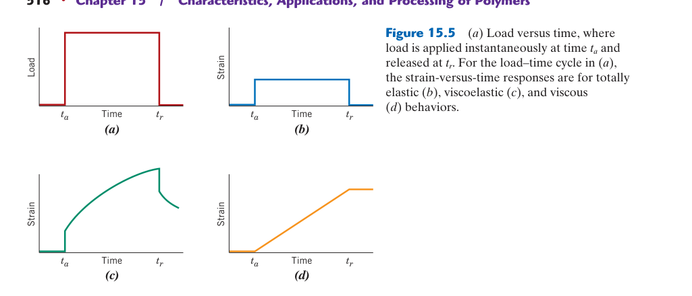
15.5 高分子力學性質的影響因素
因素彼此耦合：分子量增加纏結，結晶與取向提高剛性，增塑與吸水降低 $T_g$。同一材料在乾濕狀態、流動與橫向、薄壁與厚壁間都可能有顯著差異。
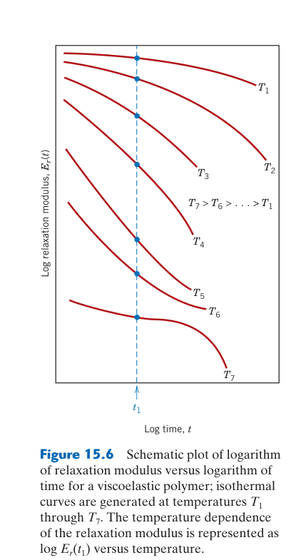
15.6 高分子的疲勞與長期性能
長期破壞由多機制共同控制：蠕變、環境應力開裂、氧化與循環自發熱可同時作用。設計應採等時曲線、蠕變破裂或主曲線資料，避免把短時間強度直接外推到多年服役。
應力–應變曲線的三種模式
脆性、塑性與高彈性模式不是只由高分子名稱決定；同一材料跨越 $T_g$、改變載入速率或加入增塑劑後，可能在三種模式間移動。判讀曲線時應先確認材料當時所處的物理狀態。
高分子的拉伸行為比金屬和陶瓷更多樣化，因為分子鏈的運動高度依賴溫度和應變速率。模式 A——脆性斷裂：在遠低於 $T_g$ 的溫度或極高應變速率下，鏈段被凍結，材料在彈性變形後直接斷裂，無降伏、無塑性變形。聚苯乙烯（PS）在室溫（$T_g$ ~100°C，室溫遠低於 $T_g$）是典型例子——這就是為什麼塑膠免洗餐具一彎就斷。
模式 B——延性行為與冷拉伸：在中間溫度（$T_g$ 附近或略高）或中等應變速率下，應力–應變曲線展現降伏、頸縮（necking）、和冷拉伸（cold drawing）。降伏後試片某處開始局部變細（頸縮），但與金屬不同，高分子的頸縮不會立刻導致斷裂——因為頸縮區內的分子鏈沿拉伸方向排列（取向，orientation），這個取向過程使頸縮區的強度高於未頸縮區，頸縮因此沿試片穩定傳播（而非集中變形直到斷裂）。當整個試片都被頸縮傳播穿越後（完全取向），應力再次上升（應變硬化），最終斷裂。PE、PP、尼龍在室溫下表現這種行為——這就是為什麼塑膠袋可以被拉伸變薄變長而不立刻破裂。
模式 C——橡膠彈性：在遠高於 $T_g$ 的溫度下，且存在輕度交聯（防止鏈滑動）時，材料表現出極大的可逆彈性變形（伸長率可達 500–1000%！）。硫化橡膠是典型——拉伸時鏈從無規線圈伸展，熵降低（鏈的構形數減少）；釋放後鏈回復到最大熵的無規狀態——這是熵彈性（entropy elasticity），與金屬的能量彈性（鍵的拉伸）完全不同。溫度愈高 → 熵的貢獻愈大 → 橡膠的彈性模數隨溫度升高而增加（與金屬相反！）。
金屬的降伏來自差排（dislocation）在應力下的滑移——是晶體缺陷的運動。高分子的降伏來自非晶區鏈段的協同運動和鏈之間的二次鍵斷裂與重組。因此高分子降伏對溫度和應變速率極其敏感——升高 10°C 或降低應變速率 10 倍可能將脆性斷裂轉變為延性行為。這與金屬的降伏（對溫度/速率相對不敏感，直到高溫潛變域）形成強烈對比。
黏彈性——時間與溫度的雙重依賴
升高溫度與延長觀察時間都讓鏈段有更多機會越過能障，因此常產生相似的軟化效果。這使高分子不能只有一個固定模數；更完整的描述是隨頻率與溫度變化的儲存模數、損耗模數與損耗因子。
純彈性固體（理想彈簧）：$\\sigma = E\\epsilon$——應力僅取決於瞬時應變，無時間依賴。純黏性液體（理想阻尼器）：$\\sigma = \\eta (d\\epsilon/dt)$——應力取決於應變速率。高分子是黏彈性材料（viscoelastic），行為介於兩者之間：施加應變後，應力不僅取決於應變量，還取決於施加的速率和持續時間。
理解黏彈性的兩種互補實驗：（1）應力鬆弛（stress relaxation）——瞬間施加固定應變 $\\epsilon_0$ 並維持，量測應力 $\\sigma(t)$ 隨時間的衰減。鬆弛模數 $E_r(t) = \\sigma(t)/\\epsilon_0$ 從初始（玻璃態）值逐漸下降到長期（橡膠態）值。應力鬆弛的分子圖像：剛施加應變時，鏈被強制拉伸離開平衡構形 → 產生高應力；隨時間推移，鏈透過局部運動重新排列（鬆弛）到新的平衡構形 → 應力逐漸降低。（2）潛變（creep）——施加固定應力 $\\sigma_0$，量測應變 $\\epsilon(t)$ 隨時間的增加。潛變柔量 $J(t) = \\epsilon(t)/\\sigma_0$。
黏彈性行為可用彈簧–阻尼器模型定量描述：Maxwell 模型（彈簧＋阻尼器串聯）——描述應力鬆弛：$\\frac{d\\epsilon}{dt} = \\frac{1}{E}\\frac{d\\sigma}{dt} + \\frac{\\sigma}{\\eta}$，應力鬆弛為指數衰減 $\\sigma(t) = \\sigma_0 e^{-t/\\tau}$（$\\tau = \\eta/E$ 為鬆弛時間）。Voigt/Kelvin 模型（彈簧＋阻尼器並聯）——描述潛變。真實高分子需要多個 Maxwell 元素並聯（廣義 Maxwell 模型），每個元素有不同的鬆弛時間 $\\tau_i$，反映不同尺度的分子運動（側基旋轉→鏈段運動→整鏈蠕動→鏈解纏）。
時間–溫度疊加原理（TTSP）
TTSP 將不同溫度的短時間資料沿對數時間軸平移，建立寬時間範圍主曲線。它要求各溫度下主導鬆弛機制相同；若跨越結晶、老化、化學降解或多相轉變，簡單水平位移便不再可靠。
高分子的黏彈性行為中，升高溫度等效於延長時間——這不是方便的近似，而是基於分子運動的物理本質：溫度愈高 → 鏈的熱運動愈劇烈 → 鬆弛過程愈快。TTSP 的實用價值極大：（1）在不同溫度下量測短時間的鬆弛模數 $E_r(t)$；（2）選擇一個參考溫度 $T_{ref}$（通常是 $T_g$）；（3）將各溫度的 $E_r(t)$ 曲線沿對數時間軸水平平移，對齊參考溫度曲線；（4）得到跨越數十個時間數量級的主曲線（master curve）。平移量 $\\log a_T$ 與溫度的關係通常遵循 WLF 方程式（Williams-Landel-Ferry）：$\\log a_T = \\frac{-C_1(T - T_{ref})}{C_2 + (T - T_{ref})}$，其中 $C_1$ 和 $C_2$ 是經驗常數（當 $T_{ref} = T_g$ 時，$C_1 \\approx 17.4$, $C_2 \\approx 51.6$ K）。TTSP 使工程師能夠從數小時的實驗室數據預測數十年的潛變行為——這對設計 50 年壽命的塑膠水管至關重要。
📝 自編概念例：TTSP 預測塑膠管的長期變形
情境：某 HDPE 水管在 20°C 的設計使用壽命為 50 年（~1.6×10⁹ 秒）。在 80°C 下進行應力鬆弛測試，觀察到完全鬆弛需約 10⁴ 秒（~3 小時）。TTSP 的平移因子 $a_T$ 約為 10⁵（80°C vs 20°C）。
驗證：50 年 / 10⁵ = 50×365×24×3600 / 10⁵ ≈ 1.58×10⁷ 秒 ≈ 183 天。這意味著 80°C 下 183 天的測試可模擬 20°C 下 50 年的行為。雖然 183 天仍很長，但比等待 50 年實際得多——而且可進一步提高測試溫度（100°C、120°C）來縮短時間。
關鍵限制：TTSP 假設所有鬆弛機制具有相同的溫度依賴性（熱流變簡單性，thermorheological simplicity），且在高溫下不發生化學變化（氧化、降解）。若高溫引發化學老化（如 PE 的熱氧化），TTSP 的預測會失效。
黏彈性不是單純的「彈簧變慢」。純彈性材料儲存所有變形能並在卸載時完全釋放（無能量耗散）；黏彈性材料在加載–卸載循環中消耗能量（應力–應變曲線形成滯後迴圈，hysteresis loop）。這就是為什麼反覆彎折金屬線會使它發熱（差排運動的摩擦），而反覆拉伸橡皮筋也會使它發熱——但機制完全不同（鏈的內部摩擦/黏性耗散 vs 差排）。在振動阻尼應用中（如汽車引擎腳座），高分子的高阻尼（高 $\\tan \\delta$）是優點——吸收振動能量轉化為熱。
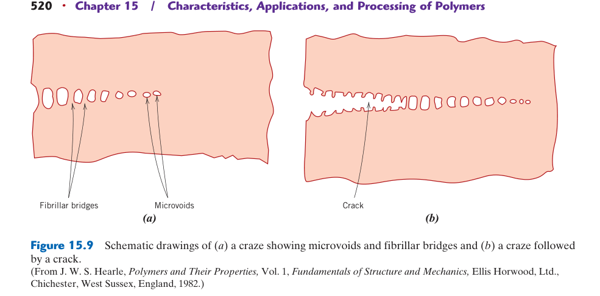
15.10 聚乙烯（PE）——產量最大的塑膠
支化控制密度與結晶：LDPE 支鏈多而柔軟，HDPE 較線性、結晶度與剛性較高；UHMWPE 靠極高分子量取得耐磨與韌性，卻因熔體黏度過高而不能用一般射出加工。
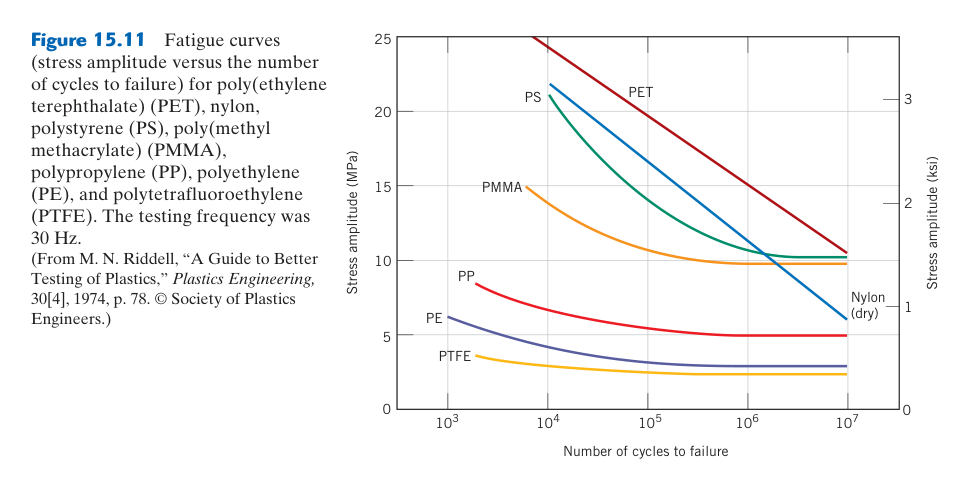
15.11 聚丙烯（PP）與其他聚烯烴
立體規整性決定可用性：等規 PP 能結晶並有良好剛度與疲勞鉸鏈性。PP 對氧化與 UV 敏感，通常需穩定劑；低溫衝擊則可用乙烯共聚或橡膠相改善。
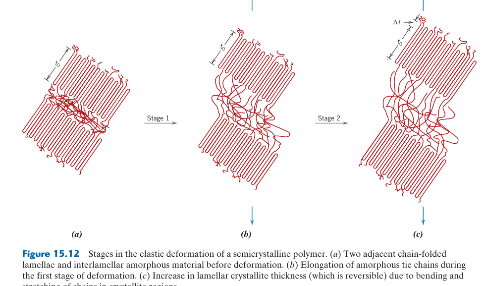
15.12 聚氯乙烯（PVC）——剛性與軟質的雙重性格
增塑劑提高鏈段活動：未增塑 PVC 因極性與高 $T_g$ 而堅硬，加入增塑劑後可製成軟管和薄膜。PVC 加熱易脫 HCl，需熱穩定劑並避免長時間滯留。
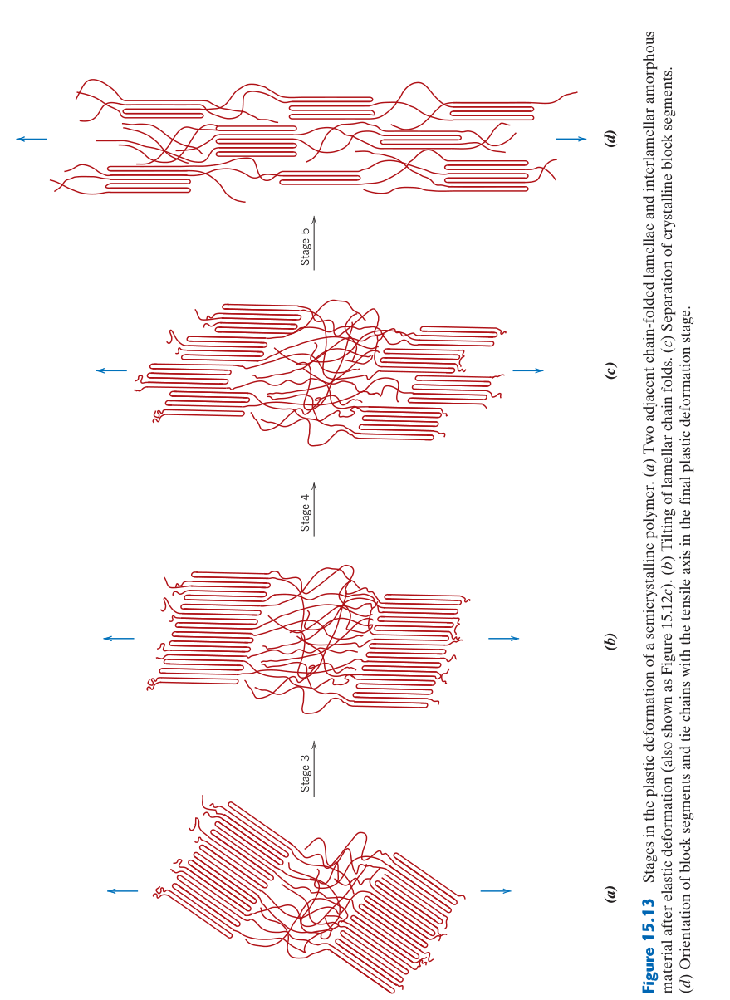
15.13 聚苯乙烯（PS）與苯乙烯共聚物
苯環帶來剛性也造成脆性：一般 PS 透明但缺口敏感；HIPS 加橡膠顆粒，以銀紋與剪切降伏吸能；ABS 結合 SAN 基體和橡膠相，平衡剛性、表面與衝擊。
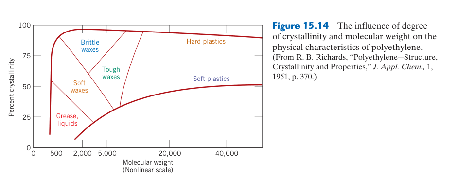
15.14 聚酯（PET）與聚碳酸酯（PC）
熔融加工前必須乾燥：PET 與 PC 含水時會水解降解。PET 可藉取向與結晶用於瓶和纖維；PC 非晶透明且耐衝擊，但耐刮、溶劑與 UV 常需額外改善。
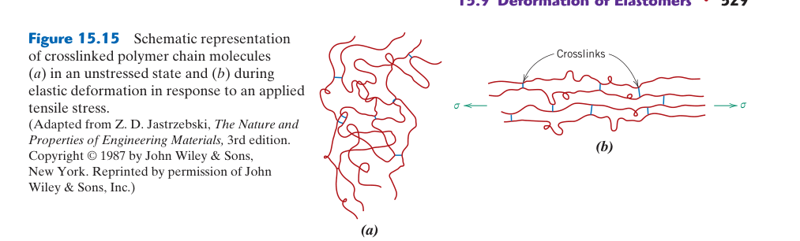
15.15 聚醯胺（Nylon）與聚甲醛（POM）
吸水改變尼龍尺寸與力學：水起增塑作用，使韌性上升、模數和 $T_g$ 降低並造成膨脹。POM 結晶度高、摩擦低，但過熱分解可能釋放甲醛，需嚴控製程溫度。
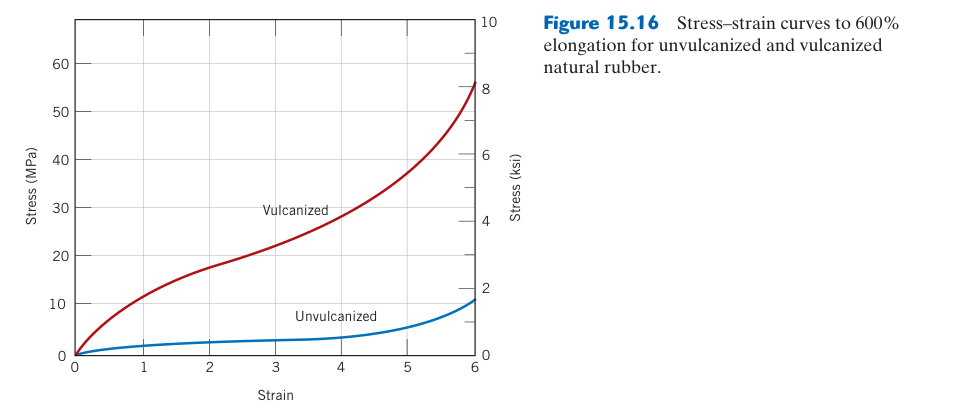
15.16 氟碳高分子（PTFE/Teflon）
強 C–F 鍵帶來惰性與低表面能：PTFE 耐化學、低摩擦卻難黏接；熔體黏度極高，常採粉末壓製燒結。長期載荷下的冷流則需填料或結構限制。
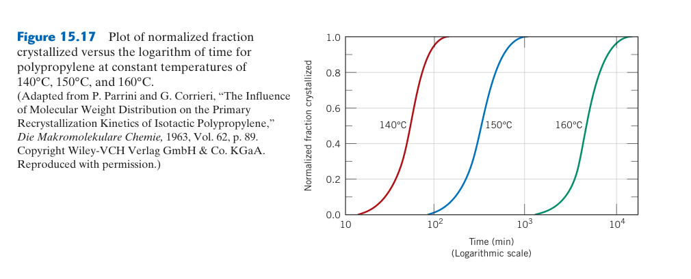
15.17 熱固性高分子——環氧、酚醛、不飽和聚酯
固化同時建立性能與殘留應力：交聯不足會留下未反應物，反應過快則放熱、收縮並形成梯度。混合比例、升溫和後固化決定網絡完整度，厚件尤其需防熱失控。
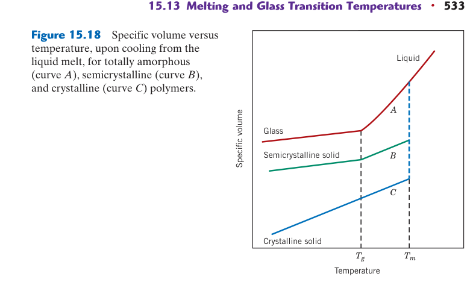
15.18 彈性體與熱塑性彈性體（TPE）
TPE 用物理硬區充當網絡節點：加熱後可熔融再加工；硫化橡膠靠永久共價交聯，耐熱與回彈較穩定但難重塑。選擇需看溫度、壓縮永久變形與回收需求。
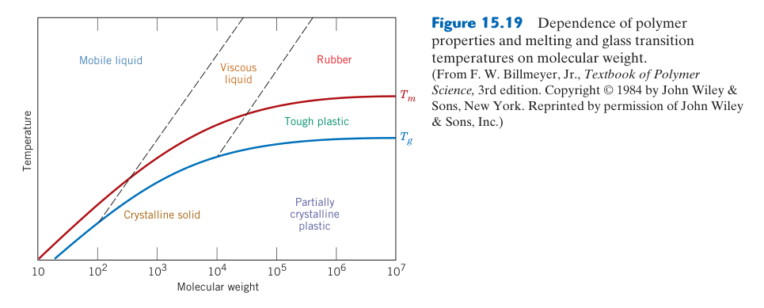
15.19 高分子添加劑
配方存在協同與副作用：抗氧化劑常成套搭配，阻燃劑可能降低韌性；填料表面處理控制界面傳力。添加量過高也會使熔體流動變差並造成團聚。
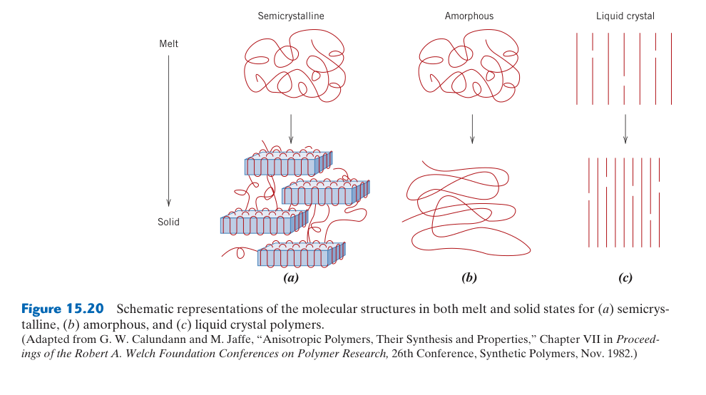
15.20 高分子加工—— 射出成形與擠出
加工歷史會寫入組織：射出剪切使皮層高度取向，核心冷卻較慢並可能結晶；擠出需控制熔體破裂與模口膨脹。保壓、模溫與冷卻共同決定縮痕、翹曲和殘留應力。
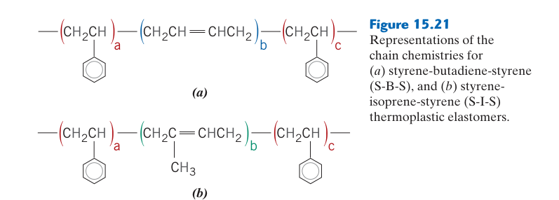
15.21 吹塑、熱成形與旋轉成形
三者都依賴適當熔體強度：吹塑型胚需抗下垂，熱成形板材需在軟化窗口保持厚度，旋轉成形粉末則靠熔融附著模壁。深拉伸區容易變薄，需預留圓角與材料分配。
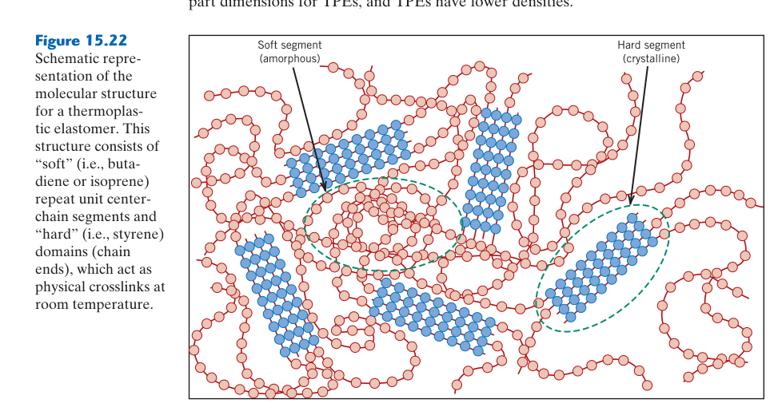
15.22 壓縮成形與傳遞成形
主要用於熱固性與橡膠：壓縮成形簡單且纖維損傷小；傳遞成形適合包封嵌件與複雜形狀，但料流可能造成纖維取向，並產生較多澆道廢料。
15.23 高分子發泡——從泡棉到結構泡沫
泡孔結構決定功能：閉孔有利隔熱與浮力，開孔有利吸音和透氣。成核、氣體溶解、泡孔長大與固化必須匹配；泡孔合併或表皮過早凝固會造成塌陷與密度不均。
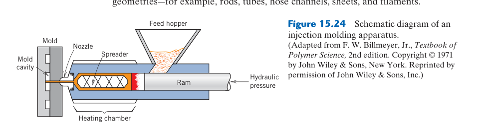
15.24 高分子複合材料
界面與方向性是核心：短纖維需超過臨界長度才能有效承載，連續纖維沿軸向效率最高但層間較弱。材料資料必須匹配纖維體積分率、鋪層和載荷方向。
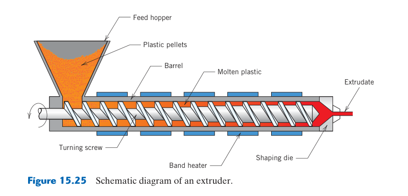
15.25 高分子回收與永續性
可回收不等於會被回收：機械回收受混料、污染與鏈降解限制；化學回收可回到單體但能耗較高。設計階段應減少難分離多層結構，並以完整生命週期評估。
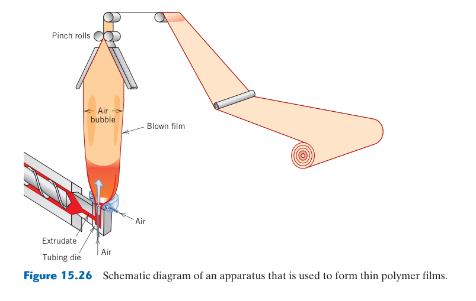
15.26 高分子材料的未來趨勢
功能與循環性需共同設計：生質來源不必然可分解，可分解材料也需特定環境。動態共價網絡、單一材質多功能包裝、自修復與可逆黏接，正嘗試平衡耐用、加工與回收。
塑膠的層級——從購物袋到太空梭
商品、工程與高性能塑膠的區分同時反映性能窗口、加工難度與成本，而非嚴格化學分類。高性能樹脂若加工溫度高、乾燥要求嚴或缺乏量產設備，其零件總成本可能遠高於原料價差。
塑膠市場可依性能和價格分為三個層級：商品塑膠（commodity plastics）年產量以百萬噸計，價格 ~1–3 USD/kg。六大商品塑膠（佔所有塑膠用量 >80%）：PE（HDPE + LDPE + LLDPE，牛奶瓶、塑膠袋、收縮膜）、PP（微波餐盒、瓶蓋、汽車保險桿、纖維）、PVC（水管、窗框、電線絕緣、人造皮革——添加塑化劑後）、PS（免洗餐具、CD 盒、包裝泡棉 EPS）、PET（飲料瓶、聚酯纖維紡織品）。這些塑膠的力學性質和耐熱性有限，但極低的成本使其在包裝和一次性用品中不可替代。
工程塑膠（engineering plastics）價格 ~3–15 USD/kg，性能明顯優於商品塑膠，可替代金屬在中等負荷應用中。代表材料：尼龍（PA 6 和 PA 6,6——齒輪、軸承、拉鍊、牙刷毛——自潤滑性、耐磨、抗疲勞）、聚碳酸酯（PC——安全眼鏡、CD/DVD、手機外殼——透明、極耐衝擊、高 $T_g$ ~147°C 使其可承受沸水）、聚甲醛（POM/acetal/Delrin®——精密齒輪、拉鍊——高結晶度→優異的尺寸穩定性和剛性）、ABS（acrylonitrile-butadiene-styrene——樂高積木、鍵盤——丙烯腈提供耐化學性、丁二烯提供耐衝擊、苯乙烯提供剛性和光澤）。
高性能塑膠（high-performance plastics）價格 ~15–100+ USD/kg，用於極端環境。PEEK（polyether ether ketone，$T_m$ ~343°C，連續使用溫度 ~250°C——航空結構件、醫療植入物、半導體製程零件）、PTFE（Teflon®，耐化學性近乎完美、摩擦係數極低——不沾鍋塗層、化學管線密封、生醫植入物）、PI（polyimide/Kapton®，耐 >400°C 短時間——太空船隔熱、軟性印刷電路基底）。這些材料的共同特徵：芳香環或雜環骨架→極高的鏈剛性→高 $T_g$ 和高 $T_m$。
添加劑——客製化性質的化學工具箱
添加劑濃度雖低，卻可能主導耐候、加工與安全；其效能會隨消耗、遷移或表面析出而衰退。加速老化試驗必須模擬實際 UV、氧、濕度與溫度耦合，單一高溫測試未必能重現戶外失效。
純高分子（「neat resin」）的性質往往無法滿足實際應用需求，因此絕大多數商業塑膠產品含有多種添加劑。最關鍵的幾類：（1）塑化劑（plasticizers）——低分子量液體（如 phthalate esters 鄰苯二甲酸酯類，DOP/DEHP），它們進入高分子鏈之間，增加自由體積（free volume），降低鏈間二次鍵吸引力→大幅降低 $T_g$（純 PVC 的 $T_g$ ~80°C，硬而脆；添加 30% DOP 後 $T_g$ 降至 ~−10°C，變成柔軟的人造皮革）。塑化劑必須與高分子相容（溶解度參數匹配）、低揮發性（不隨時間逸散）、低遷移性（不滲出到表面或接觸的物質）。塑化劑遷移是塑膠老化的主要原因之一——汽車儀表板的 PVC 表皮多年後變硬變脆就是塑化劑逐漸揮發/遷移的結果。
（2）穩定劑（stabilizers）——防止高分子在使用或加工中降解。UV 穩定劑（碳黑、benzotriazoles、HALS——受阻胺光穩定劑）吸收紫外光或淬滅激發態，防止光氧化鏈斷裂。抗氧化劑（hindered phenols、phosphites）犧牲性消耗自由基或分解氫過氧化物。沒有穩定劑的 PP 在戶外陽光下幾天就會脆化。（3）填料（fillers）——無機粉末（CaCO₃、滑石粉 talc、二氧化矽、碳黑）降低成本或改善特定性質：碳黑（~30 nm）補強橡膠（拉伸強度提升 >10 倍！——這是奈米複合材料的早期典範）；玻璃纖維（提高剛性和強度——GFRP）；奈米黏土（montmorillonite，提高阻氣性和阻燃性）。（4）阻燃劑（flame retardants）——降低高分子燃燒性，在電子產品（電視、電腦外殼）、建材、交通工具內裝中至關重要。鹵素系（溴化、氯化化合物）釋放自由基捕捉劑中斷燃燒鏈反應；無鹵系（氫氧化鋁 Al(OH)₃、氫氧化鎂 Mg(OH)₂）在高溫分解時釋放水分吸收熱量並稀釋可燃氣體。
鄰苯二甲酸酯類（phthalates）是使用最廣泛的塑化劑，但因內分泌干擾（endocrine disruption）疑慮——動物研究顯示某些 phthalates 干擾雄性生殖發育——已引發全球性的法規變革。歐盟 REACH 法規限制 DEHP、DBP、BBP 在玩具和兒童用品中的使用；美國消費品安全委員會（CPSC）對兒童玩具中的 phthalates 設有限值。替代方案包括：檸檬酸酯（citrates，如 ATBC——乙醯基檸檬酸三丁酯，基於天然檸檬酸）、環氧大豆油（ESBO）、己二酸酯（adipates，低溫彈性佳但揮發性較高）。這是材料工程與公共健康交織的典型案例——選擇添加劑時不僅要考慮技術性能，還要考慮生命週期中的健康與環境影響。
熱塑性塑膠的加工方法
加工窗口位於能充分流動但尚未顯著熱裂解的溫度與剪切範圍。熔體溫度過低會短射與熔接線弱，過高則造成降解、氣泡和變色；冷卻不均又會把取向和收縮差凍結成翹曲。
射出成形（injection molding）是最重要的熱塑性加工方法（佔所有塑膠成形 ~32%）。粒料從料斗進入加熱料管，旋轉螺桿將熔融塑膠推送並加壓 → 高速注入閉合的金屬模具（模穴）→ 在模具內冷卻固化 → 模具打開、頂針將成品頂出。循環時間從數秒（薄壁杯）到數分鐘（厚壁汽車零件）。 射出成形的關鍵參數：熔體溫度（需高於 $T_m$ 或 $T_g$ 但低於降解溫度）、射出壓力（50–200 MPa——克服模具內熔體流動阻力）、模具溫度（影響結晶度和表面品質）、保壓（packing，補充因冷卻收縮的體積以避免縮孔）。 射出成形的設計限制：成品必須能從模具中脫出（需要拔模角度 draft angle）、壁厚要均勻（避免冷卻不均導致翹曲）、避免底切（undercut）。
擠出（extrusion）：類似 射出成形的熔融和推送，但塑膠從模具連續擠出（而非間歇射入閉合模具），產出連續的型材——管材、板材、薄膜、窗框異形材、電線絕緣包覆。擠出後的型材在水槽中冷卻，由牽引機以控制速度拉出，切成定長。吹膜擠出（blown film extrusion）：環形模具擠出薄管 → 內部吹氣膨脹成氣泡 → 冷卻 → 壓扁捲取——這是製造 LDPE 塑膠袋和收縮膜的主要方法。
吹瓶（blow molding）：先製出管狀胚料（parison，由擠出或 射出成形）→ 胚料置入兩半模具中 → 吹氣使胚料膨脹貼合模具內壁 → 冷卻 → 開模取出中空容器。PET 飲料瓶的兩階段製程：先 射出成形「瓶胚」（preform，厚壁試管狀，含已成形螺紋瓶口）→ 再加熱瓶胚 → 拉伸吹瓶（stretch blow molding，縱向機械拉伸 + 橫向吹氣膨脹——雙軸取向使 PET 強度大增、透明度提高、阻氣性改善）。
熱壓成形（compression molding）：主要用於熱固性塑膠。將預熱的熱固性模塑化合物（含部分交聯的預聚物、填料、催化劑）放入加熱模具 → 閉合模具加壓 → 熱引發交聯反應完成固化 → 開模取出。因為熱固性不能重新熔融，不能使用射出或擠出。應用：電氣開關面板、馬桶座、煞車來令片。
3D 列印/積層製造（additive manufacturing）：FDM/FFF（熔融沉積）——熱塑性線材（PLA、ABS、PETG）經加熱噴頭熔化 → 逐層堆積。最便宜、最普及的桌上型 3D 列印技術。SLA/DLP（光固化）——UV 光選擇性固化液態光敏樹脂（熱固性——不可回收）。SLS（選擇性雷射燒結）——雷射掃描選擇性熔融 PA 粉末床中的顆粒 → 未熔粉末作為支撐（不需列印支撐結構）。3D 列印的獨特優勢：無需模具→極低成本的原型製作和小批量生產；可製造傳統加工無法實現的複雜幾何（內部晶格結構、共形冷卻水道）。
📝 自編概念例：為什麼 射出成形的塑膠杯有「模線」？
現象：大多數塑膠製品上可以看到一條細線環繞（如塑膠杯側面、牙刷柄）。這是「分模線」（parting line）。
原因：模具由兩半（固定側 + 移動側）組成，閉合時兩半的接合面就是分模面。熔融塑膠在高壓下可能滲入接合面的微小間隙→形成極薄的「毛邊」（flash）。分模線是成形工藝的必然產物——無法完全消除，只能透過精密模具加工和適當鎖模力來最小化。高品質產品的分模線會被後加工打磨去除（如手機外殼），低成本的量產品則保留（如免洗杯）。
工程意義：模具設計的第一個決策是分模面位置——它決定了成品能否從模具中取出、毛邊在哪裡、澆口位置如何安排、以及模具的加工成本。一個巧妙的模具設計師會把分模線放在不顯眼的位置或在後加工中可輕易去除的位置。
塑膠產品上的三角形追趕箭頭標誌（♳♴♵♶♷♸♹）含 1–7 的數字——這是 ASTM 的樹脂識別碼（Resin Identification Code, RIC），最初用意是協助回收分類，但外觀設計成回收符號的陷阱使大眾誤以為所有編號都可回收。實際上：1 (PET) 和 2 (HDPE) 具有成熟的回收市場，經濟上可行；3 (PVC)、6 (PS)、7 (其他/混合) 的回收極其有限——分離成本高、降級嚴重、終端市場小。許多標有回收符號的塑膠最終進入焚化爐或掩埋場。更準確的判斷方式是查詢當地的回收指南（不同城市處理能力不同），而非僅看符號。
彈性體的熱力學基礎
理想橡膠的回復力隨絕對溫度增加，與一般金屬彈性直覺不同，因為主要代價是鏈構形熵而非鍵伸長。填料、結晶與黏彈耗能會使真實橡膠偏離理想模型並產生 Mullins 軟化與遲滯。
彈性體（橡膠）的獨特彈性來自熵，而非能量。當一條高分子鏈被拉伸時，可及的構形數（$\\Omega$）減少——因為鏈被迫從無規線圈狀態（最大構形數）向伸展狀態（較少構形數）移動。根據 Boltzmann 熵公式 $S = k_B \\ln \\Omega$，構形數減少 → 熵降低。熱力學上，Helmholtz 自由能 $A = U - TS$——在恆溫條件下，恢復力 $f = (\\partial A/\\partial L)_T = (\\partial U/\\partial L)_T - T(\\partial S/\\partial L)_T$。對於理想橡膠，內能項 $(\\partial U/\\partial L)_T \\approx 0$（鍵的拉伸幾乎不改變內能），因此恢復力完全來自熵項：$f = -T(\\partial S/\\partial L)_T$——溫度愈高，恢復力愈大。
這個看似違反直覺的結果（熱橡膠比冷橡膠更「有力」）可以透過簡單實驗驗證：將拉伸的橡皮筋靠近熱源（吹風機）——它會收縮（因為溫度升高→熵的貢獻增大→恢復力變大→拉伸長度縮短）。這與金屬彈簧完全相反（金屬加熱→熱膨脹→變長；彈性模數降低→變軟）。
彈性體的力學行為可用橡膠彈性統計理論描述。對於仿射網絡模型（affine network model），工程應力 $\\sigma$ 與拉伸比 $\\lambda = L/L_0$ 的關係為：$\\sigma = \\nu k_B T (\\lambda - 1/\\lambda^2)$，其中 $\\nu$ 是單位體積內的彈性有效鏈數（與交聯密度成正比）。這解釋了實驗觀察到的 S 形應力–應變曲線和模數與絕對溫度成正比的特性。交聯密度愈高 → $\\nu$ 愈大 → 材料愈剛。
纖維紡絲——取向的終極應用
紡絲後的牽伸使鏈沿纖維軸排列並促進結晶，顯著提高軸向強度與模數；但橫向與缺口性能不一定同步提升。牽伸比、冷卻、熱定型與分子量共同決定取向能否被穩定保留。
紡織纖維（尼龍、PET、PP、acrylic）的製造完美展示了取向強化原理。熔紡（melt spinning）：熔融高分子從紡嘴（spinneret，含數百至數千個微孔）擠出 → 冷卻空氣使細流凝固 → 初生纖維（as-spun fiber）的分子鏈取向度低 → 性質較差。關鍵的後續步驟是拉伸（drawing）：將初生纖維加熱至 $T_g$ 以上（使鏈段可運動但結晶區尚未熔化），以 3–10 倍的拉伸比進行機械拉伸。拉伸過程中，鏈沿纖維軸排列（取向）、應變誘導結晶（strain-induced crystallization，拉伸使鏈排列 → 更容易結晶）→ 最終纖維的拉伸強度可達初生纖維的 5–15 倍。
以 PET 聚酯纖維為例：初生纖維的拉伸強度 ~30–50 MPa（低取向、非晶為主），拉伸比 5× → 拉伸後強度 ~400–800 MPa（高度取向、應變誘導結晶度 ~30–50%），彈性模數從 ~3 GPa 提升至 ~10–15 GPa。這就是為什麼聚酯襯衫比塑膠飲料瓶堅韌得多——它們是同一種高分子（PET），但不同的微觀結構賦予了完全不同的力學性質。
高性能纖維（如 Kevlar®、Dyneema®、碳纖維）將取向原理推到極致。Kevlar（芳香族聚醯胺，para-aramid）的剛性棒狀分子鏈在紡絲過程中自發排列成液晶態 → 進一步拉伸使取向接近完美 → 纖維拉伸強度達 ~3.6 GPa（鋼的 ~5–6 倍，但密度僅鋼的 1/5！）。Dyneema®（超高分子量 PE，UHMWPE，$M_w > 10^6$ g/mol）使用凝膠紡絲（gel spinning）：PE 溶解在溶劑中 → 紡絲 → 超高拉伸比（>30×）→ 鏈完全伸展排列 → 強度達 ~3–4 GPa。這些纖維的比強度（強度/密度）超越所有金屬——這就是為什麼防彈衣和釣魚線使用高分子纖維而非鋼絲。另一個重要應用是輪胎簾布（tire cord）——尼龍或 PET 纖維作為橡膠輪胎的增強骨架，利用取向纖維的高強度承受胎壓（~200–300 kPa）和行駛中的週期性載荷。高性能賽車輪胎甚至使用 Kevlar 簾布以在極高速下維持尺寸穩定性。
日常生活中包裹食品、飲料罐和電子產品的透明收縮膜，是利用了高分子黏彈性和結晶行為的巧妙工程。製程原理：(1) 將高分子薄膜（通常是 PE、PVC 或 PET）加熱至高於 $T_g$（對於非晶高分子）或接近 $T_m$（對於半結晶高分子）的溫度；(2) 在高溫下拉伸薄膜——分子鏈沿拉伸方向定向排列（orientation）；(3) 快速冷卻，將定向結構「凍結」在薄膜中——此時薄膜處於非平衡的亞穩態。
使用時，將收縮膜包裹物品後加熱——凍結的定向應力被釋放，分子鏈趨向恢復無序的纏繞狀態，薄膜在拉伸方向收縮（可達 50% 或更多），緊密貼合物體表面。這就是為什麼超市的即食餐盒上的塑膠膜在微波加熱時會收縮。
19 世紀的撞球是由象牙製成的——來自大象的長牙。隨著撞球運動的普及，象牙供應嚴重不足（每根象牙只能製作約 3–4 顆球）。1860 年代，一位美國撞球製造商懸賞 10,000 美元徵求象牙替代品，促成了最早的合成塑膠開發。
最終的解決方案是酚醛樹脂（phenolic resin, Bakelite 的前身）——由酚（phenol）和甲醛（formaldehyde）縮合聚合（condensation polymerization）而成的熱固性高分子。固化後的酚醛樹脂：(1) 極硬且耐刮——堪比象牙；(2) 密度與象牙相近——球的反彈和滾動行為一致；(3) 高度交聯——不會軟化或溶解；(4) 可染色——傳統的球號和花色得以保留。
這個案例說明了材料科學中的一個核心主題：材料替代不僅要找「夠強」的替代品，還需要匹配密度、彈性、摩擦係數和加工性。酚醛撞球至今仍是專業比賽的標準——從象牙危機催生的塑膠時代。
本章摘要
關鍵概念對照表
| 主題 | 核心要點 | 關鍵參數 |
|---|---|---|
| 脆性模式 | $T \\ll T_g$ 或極高速率。鏈段凍結，彈性→斷裂。PS 室溫 | $T < T_g$ |
| 延性冷拉伸 | $T \\sim T_g$。降伏→頸縮→取向強化→頸縮穩定傳播→應變硬化 | 取向使強度提升 >10× |
| 橡膠彈性 | $T \\gg T_g$ + 輕度交聯。熵彈性——恢復力來自熵最大化。模數隨 T↑而↑ | 伸長率 500–1000% |
| 黏彈性 | 兼具彈性（彈簧）和黏性（阻尼器）。行為取決於時間和溫度 | $E_r(t)$, $J(t)$, $\\tau = \\eta/E$ |
| TTSP | 高溫＝長時間等效。平移因子 $a_T$ 遵循 WLF 方程。數小時實驗→預測數十年 | $C_1 \\approx 17.4$, $C_2 \\approx 51.6$K |
| $T_g$ | 非晶區玻璃態↔橡膠態。鏈剛性↑、側基↑、交聯↑ → $T_g$↑ | PE: −120°C, PVC: 80°C, PC: 147°C |
| 商品塑膠 | PE, PP, PVC, PS, PET。量大價低 (~1–3 USD/kg)，佔 >80% | 包裝、一次性用品 |
| 工程塑膠 | PA, PC, POM, ABS。替代金屬在中負荷 (~3–15 USD/kg) | 齒輪、軸承、安全眼鏡 |
| 高性能塑膠 | PEEK, PTFE, PI。極端環境 (~15–100+ USD/kg) | $T_m$ ~343°C (PEEK) |
| 塑化劑 | 增加自由體積→降低 $T_g$。PVC + 30% DOP：$T_g$ 從 80→−10°C。遷移導致老化 | phthalates、citrates |
| 穩定劑 | UV 穩定劑、抗氧化劑——防止鏈降解。無穩定劑 PP：戶外數天脆化 | HALS、hindered phenols |
| 射出成形 | 熔融→高壓射入模具→冷卻。~32% 塑膠產品。循環：數秒至數分鐘 | 壓力 50–200 MPa |
| 吹瓶 | 胚料→吹氣膨脹。PET 瓶拉伸吹瓶→雙軸取向→強度+透明+阻氣 | 中空容器 |
初學者常見錯誤
兩者都表現為無降伏的斷裂，但微觀機制完全不同。金屬脆性來自差排移動被阻礙（低溫、高應變速率、BCC 金屬的韌脆轉變）；高分子脆性來自鏈段運動被凍結（溫度低於 $T_g$）。這就是為什麼加熱 PS 到 >100°C（超過其 $T_g$）會使它從脆性變為可彎曲——金屬無法透過升溫 100°C 從脆性變為延性（除非跨越韌脆轉變溫度，但那是一個窄的溫度範圍而非漸進轉變）。
金屬的降伏應力對應變速率相對不敏感（除非極高速率如爆炸成形）。高分子則對速率極其敏感——快速拉伸時鏈沒有足夠時間鬆弛→表現為脆性；慢速拉伸時鏈可以重新排列→表現為延性。同一個 PE 樣品在高速拉伸下可能脆斷，在慢速拉伸下可能伸長 >500%。這是高分子在工程設計中最大的挑戰之一——材料性質不是常數，而是溫度+速率的函數。
塑膠隨時間變脆有兩個不同原因：（1）物理老化（physical aging）——非晶區在 $T_g$ 以下逐漸趨向更緊密堆積（體積鬆弛），自由體積減少→鏈段運動更受限→材料變脆。這是可逆的——加熱到 $T_g$ 以上可消除物理老化。（2）化學老化（chemical aging）——鏈斷裂（UV 氧化、熱降解）或交聯。這是不可逆的——分子量下降或交聯密度上升永久改變了材料。辨別法：化學老化的塑膠通常伴隨顏色變化（黃化、褐變）和表面裂紋。
只有熱塑性塑膠可以回收重塑（加熱軟化→重新成形）。熱固性塑膠（環氧、酚醛、不飽和聚酯）一旦固化，加熱只會分解碳化——無法重塑。即使是熱塑性，每次回收循環都可能導致鏈降解（分子量下降）和雜質累積（不同塑膠混合、標籤殘留、食物殘渣），使回收料的性質顯著低於 virgin 材料。這就是為什麼大多數「回收塑膠」實際上是被降級回收（downcycling）為低階產品（如塑膠瓶→化纖填充物），而非真正的「瓶到瓶」循環回收。
概念診斷題
- 一條橡皮筋在冰箱中（~4°C）和在熱水中（~80°C）的彈性行為有何不同？哪個情況下拉伸後恢復得更快？為什麼？提示：$T_g$ 在哪裡？熵彈性中模數與溫度的關係。
- 一個設計工程師需要在 60°C 連續使用的高分子齒輪。候選材料為 PP（$T_g$ ~−10°C, $T_m$ ~176°C）和 PC（$T_g$ ~147°C）。哪個更合適？為什麼？提示：60°C 相對於每個材料的 $T_g$ 在什麼位置？
- 為什麼 PVC 水管在冬天的衝擊下比夏天更容易破裂？提示：PVC 的 $T_g$ ~80°C。0°C vs 35°C 對鏈段運動的影響。
- 一個標有 ♳ (1, PET) 的飲料瓶和一個標有 ♶ (6, PS) 的優格杯——哪個實際上更可能被回收？為什麼兩者的回收率差異巨大？
- 某塑膠產品在使用 5 年後變黃且極脆。這是物理老化還是化學老化？如何判斷？提示：物理老化可逆，化學老化不可逆。
延伸資源
- Ferry, J.D., Viscoelastic Properties of Polymers — 高分子黏彈性的經典之作，TTSP 和 WLF 方程的完整推導
- Bicerano, J., Prediction of Polymer Properties — 從化學結構預測高分子 $T_g$、$T_m$ 和力學性質的方法
- Osswald, T.A. & Menges, G., Materials Science of Polymers for Engineers — 從加工工程師視角的高分子材料科學
- YouTube: "A Brief History of Plastics" by TED-Ed — 塑膠從 Bakelite 到現代的歷史與影響
- Ward, I.M. & Sweeney, J., Mechanical Properties of Solid Polymers — 高分子力學行為的完整處理，涵蓋黏彈性、降伏、斷裂
- Mark, J.E. (ed.), Physical Properties of Polymers Handbook — 各類高分子 $T_g$、$T_m$、力學性質的權威數據彙編